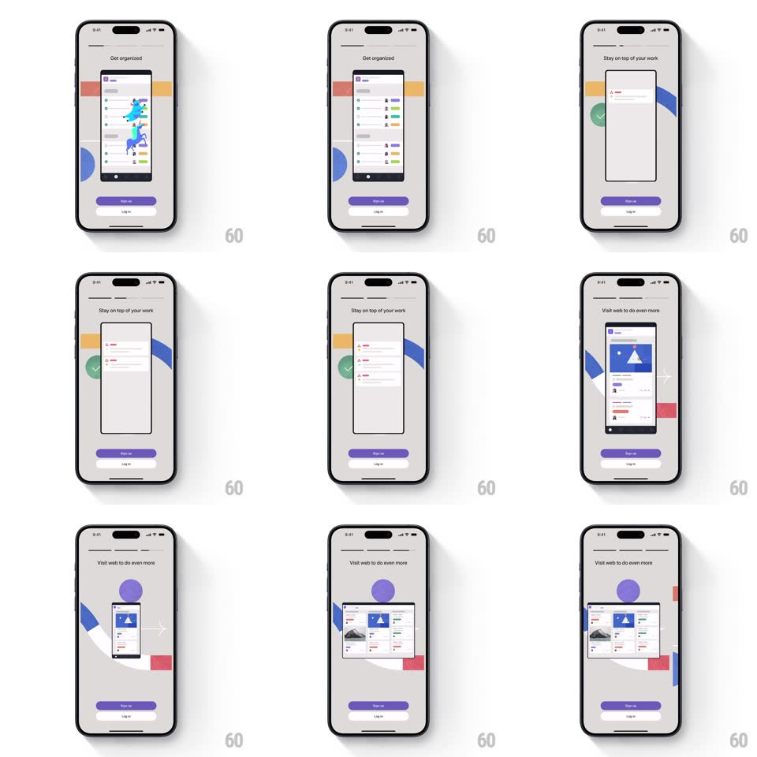

Media
Frame-by-frame

Rebuild this interaction 1:1: Asana's mobile onboarding carousel - playful slides ("Get organized", "Stay on top of your work", "Visit web to do even more") where a phone mockup shows app screens, a unicorn swoops through, list rows stagger in, and the phone morphs into a wide desktop window for the web slide, with Sign up / Log in pinned below.

Rebuild this interaction 1:1: Asana's mobile onboarding carousel - playful slides ("Get organized", "Stay on top of your work", "Visit web to do even more") where a phone mockup shows app screens, a unicorn swoops through, list rows stagger in, and the phone morphs into a wide desktop window for the web slide, with Sign up / Log in pinned below.
## Integration
Integration: stack-agnostic spec - springs given as stiffness/damping, timed motions as duration + curve; map every value to your framework and animation library of choice.
## Scene
Light gray backdrop with flat color shapes (blue circle, yellow rectangles, green check). Center: a phone mockup displaying Asana UI. Headline above, page dots, and two stacked buttons (purple Sign up, outlined Log in) fixed at bottom. Final slide: the device is a wide desktop browser window showing boards.
## Motion spec
Pattern: carousel with device-morph finale.
- Slide change (auto ~4s or swipe): the current device slides out left with a slight rotate (-4deg) while the next slides in (spring ~320/22); headline crossfades 100ms into the move; page dot stretches to the active position (width spring ~380/20).
- Slide 2: the unicorn swoops across the phone's screen (1.2s arc, rainbow trail fading behind it), then list rows stagger into the mockup (fade + 14px, 40ms apart).
- Slide 3: the phone's frame expands horizontally - corners, bezels, and screen all stretching (spring ~300/20, 600ms) - into a desktop browser window, the mobile UI reflowing into the web layout live during the morph; a cursor dot appears and clicks a card (dip 120ms).
- Buttons stay pinned through every slide - only the stage above them performs.
## Calibration
- The device morph is the signature: same content, new form factor, one continuous reshape.
- Auto-advance pauses on touch and resumes after 3s idle.
## Reduced motion
Slides crossfade; device swap is a fade, not a morph.
## Don't miss
- The morph carries the content WITH it - no cut to a pre-rendered desktop image.
- Color shapes in the backdrop drift a few px per slide - parallax keeps the gray alive.